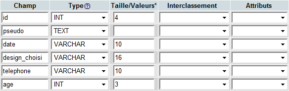
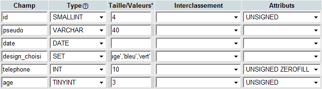
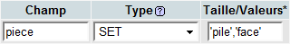
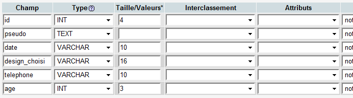

Ce tutoriel vise à alléger au maximum vos tables SQL en choisissant les bons types et en utilisant à bon escient les attributs et autres options.
Vous n'utilisez que les types INT et TEXT sans aucun attribut ?
Alors ce tuto est pour vous, vous êtes sur le point de diviser par 2 la taille des données stockées dans votre BDD.
Ce tutoriel sera composé de deux types de parties. Lorsque vous voyez à droite le logo vert ci-contre, vous êtes dans une partie principale, aucune connaissance outre les bases en SQL n'est nécessaire. En suivant toutes les parties vertes, vous pourrez déjà grandement optimiser vos tables.
Les parties arborant un logo orange permettent d'approfondir. Si vous êtes curieux, si vous voulez savoir le pourquoi du comment, lisez-les. Et n'oubliez pas qu'en comprenant MySQL en profondeur, vous serez d'autant plus efficace dans la pratique et pourrez vraiment choisir vos structures en connaissance de cause. Notez que ces parties vous demanderont quelques notions de mathématique, de binaire ou d'informatique. Si vous débutez ou que vous souhaitez aller à l'essentiel, vous pouvez sauter ces parties et descendre jusqu'au logo vert suivant.
Commençons par un exemple de table mal optimisée (créée avec phpMyAdmin) :

Je teste une requête sur cette table, voilà la requête :
INSERT INTO `super_lourd` VALUES (1, 'Jean-Yves', '1990-02-16', 'rouge', '0125262728', 19);
Et ensuite, je regarde le poids de cette ligne ("Espace utilisé" dans phpMyAdmin) : 52 octets.
Essayons maintenant avec cette configuration :

Les données restent exactement les mêmes sauf que le poids, lui, passe à 28 octets.
Bref sur une table aussi simple que celle-là contenant 1000 lignes, on peut économiser 23 Ko !
Optimiser ses structures de table SQL consiste à choisir les formats les plus petits possibles pour stocker ses données.
En gros, c'est comme si vous deviez envoyer à 1000 personnes :
un courrier
un outil
un mp3
Et que vous deviez commander vos enveloppes et cartons en lots. Si vous n'envoyez que des petits courriers vous prenez un lot de 1000 petites enveloppes, pas des enveloppes A3, vous allez perdre des sous. L'outil peut être gros, il vous faut un carton extensible ^^ Et les mp3, c'est fragile, si vous ne mettez pas de papier-bulle, ils vont se casser.
En SQL, il faut aussi adapter le conteneur au contenu. Voyons maintenant les formats disponibles.
Pourquoi préférer les types numériques aux textuels ?
Tout ce qui peut être rapporté à un nombre entier doit être enregistré dans un format INT (TINYINT, SMALLINT, INT...).
Et pourquoi d'abord ?
Parce qu'au final, tout sera enregistré en binaire dans des petits octets. Un octet peut prendre 256 formes. Pour une valeur numérique, ça revient à pouvoir stocker un nombre entre 0 et 255, et pour un texte, c'est une lettre ou un symbole ou un chiffre. Ce qui implique que si vous prenez un type texte limité à 1 octet pour stocker un nombre, vous irez de 0 à 9 et c'est tout ! On est loin des 255.
Comment choisir le bon INT ?
Et oui, des INT, il y en a pas mal. Ils ont chacun une taille définie et des limites que voici :
Type
Poids en octets
Minimum
Maximum
TINYINT
1
-128
127
SMALLINT
2
-32 768
32 767
MEDIUMINT
3
-8 388 608
8 388 607
INT
4
-2 147 483 648
2 147 483 647
BIGINT
8
-9 223 372 036 854 775 808
9 223 372 036 854 775 807
Il faut donc choisir le type dont les bornes encadrent vos nombres au plus près.
Le nombre à virgule
Pour les nombres à virgule, c'est moins compliqué, vous avez FLOAT (occupe 4 octets) et DOUBLE (8 octets). La seule chose qui différencie les deux types, c'est la précision : Supposons qu'on veuille stocker : 3.1415926535897931159979634685441851615905761718753236... En DOUBLE, on a : 3.141592653589793115997963468544185161590576171875 En FLOAT, on a : 3.1415926535897931159979634685442 Vous pouvez voir que DOUBLE est plus précis que FLOAT mais qu'aucun des deux types ne permet de stocker une précision infinie. Le stockage binaire est dit discret. Ce qui signifie qu'au delà d'une précision donnée, les valeurs et calculs de nombres à virgule ne sont que des approximations.
Enfin, il y a DECIMAL, c'est un type pour des nombres entiers ou à virgule de précision exacte dont on peut définir les limites. Par exemple DECIMAL(5,3) autorise au maximum 5 chiffres dont 3 sont situés après la virgule (exemple 12,345). Ce type est un peu moins optimisé que les précédents puisqu'il occupe M+2 octets si D>0 et M+1 octets si D=0 avec M et D les paramètres de DECIMAL : DECIMAL(M,D). Donc avec notre exemple DECIMAL(5,3) D=3 et M=5 ; la colonne occupe alors 5+2=7 octets. Notez qu'un nombre entier ou à virgule prend autant de place dans un VARCHAR que dans un type DECIMAL. Il est plus que probable que DECIMAL convertisse les nombres en chaînes de caractères pour les stocker à la différence que l'utilisation de DECIMAL vous garantit qu'il n'y aura que des nombres dans la colonne.
Les attributs des types numériques
C'est bête, moi je veux enregistrer la taille en centimètre de mes visiteurs, les TINYINT ne sont pas suffisants et en même temps, je n'ai pas besoin des négatifs.
Et bien il y a mieux que de soustraire 127 à la taille pour l'enregistrer en TINYINT, vous pouvez choisir l'attribut UNSIGNED qui signifie non-algébrique, cela limite les colonnes aux nombres positifs. Le minimum des tous les types devient alors 0 et les maximums sont les suivants :
Type
Poids en octets
Maximum
TINYINT
1
255
SMALLINT
2
65 535
MEDIUMINT
3
16 777 215
INT
4
4 294 967 295
BIGINT
8
18 446 744 073 709 551 615
Talus me propose de vous expliquer pourquoi le maximum augmente en UNSIGNED.
Les nombres sont stockés sous leur forme binaire (ils sont convertis en une suite de 0 et de 1 appelés bits). Un octet donne 8 bits, d'où les 256 solutions (28), or si un nombre peut être négatif, il va falloir utiliser 1 bit pour stocker le signe (0, pour + et 1 pour -). Voyez par vous-même le résultat d'un petit script maison :
46 en binaire
00101110
128-46 en binaire
01010010
256-46 en binaire
11010010
-46 en binaire
11010010
Vous constatez que les 7 derniers bits sont les mêmes dans les trois dernières lignes et que -46 ainsi que 210 (256-46) s'écrivent de la même façon dans un octet. Et le premier octet suit cette règle : De -128 à -1 : 1 De 0 à 127 : 0 De 128 à 255 : 1 Donc si le premier bit est égal à 0, SQL convertit simplement ce nombre en décimal. S'il est égal à 1 :
il renvoie un nombre négatif de valeur égale à 128 moins les 7 autres bits convertis en décimal.
Sauf si l'on active l'attribut UNSIGNED, là il convertit les 8 bits en décimal.
Donc en libérant le bit qui s'occupe du signe, on multiplie par deux la capacité de stockage pour la valeur absolue du nombre.
Peut importe le nombre de bits total utilisé, il n'y a jamais besoin que d'un seul bit pour coder le signe. On peut donc obtenir le nombre maximal stockable dans un type de colonne en fonction de la taille de stockage en octets (notée n) comme ça :
Sans attribut : 2(n*8)-1-1
Avec UNSIGNED : 2(n*8)-1
Et le deuxième attribut qui s'avère utile moins souvent mais quelques fois tout de même : ZEROFILL. Comme son nom l'indique, il remplit les valeurs entrées avec des zéros.
N'ayez crainte, aucun mal ne sera fait à aucun d'entre nous, il s'agit du chiffre zéro et non des utilisateurs de ce site. (Comment ça, c'est pas drôle :euh: )
Donc si j'enregistre 23 dans un TINYINT UNSIGNED ZEROFILL (ZEROFILL implique l'attribut UNSIGNED), SQL enregistrera 023. Ou encore dans un SMALLINT UNSIGNED ZEROFILL : 00023.
Ha c'est bien mais si je veux stocker un nombre à 4 chiffres complété par des zéros (comme par exemple un CHMOD 0755, 0664...), hein ?
Et bien, c'est là, qu'intervient la taille des colonnes.
SMALLINT(4) UNSIGNED ZEROFILL
Ou sur phpMyAdmin :
Précision de calcul
On a vu plus haut que les nombres à virgules étaient stockés sous la forme de deux nombres entiers. En comprenant que seul des nombres entiers sont enregistrés et qu'ils sont codés sur un nombre fini de bits, certains nombres ou résultats seront obligatoirement approximés.
Tout d'abord, sachez que si vous faites la somme de plusieurs nombres entiers, il n'y a pas de perte de précision. Ce n'est pas parce que votre colonne est un TINYINT que SQL ne peut pas calculer au-delà de 256, en additionnant deux TINYINT de 250, on obtient bien 500. Les résultats sont fiables tant qu'on ne dépasse pas 64 bits de précision. En BIGINT, certaines fonctions telles que SMU() permettent d'obtenir des valeurs exactes même avec de grands nombre. Par exemple la somme de deux entées : 18446744073709551615 et 18446744073709551614, le résultat retourné est 36893488147419103229. La valeur est exacte malgré le dépassement des 64 bits. Attention cependant au logiciel qui récupèrera ce résultat. Par exemple PHP a une précision de 14 bits par défaut, ce qui est bien en deçà, on perd donc dans le cas présent 8 décimales. En faisant ini_set('precision',32);), on réduit la perte à une seule décimale. Et la précision du logiciel ne peut excéder celle du système (généralement 32 ou 64 bits). Il y a donc toujours une limite. Notez tout de même que vous pouvez restituer le nombre sous forme de texte sans perte et utiliser la bibliothèque GMP pour faire des calculs sur de grands nombres. Cette bibliothèque est disponible dans de nombreux langages (y compris PHP : fonctions GMP). En revanche, certains calculs vont donner des résultats très inattendus si la précision est dépassée : 18446744073709551615 + 18446744073709551614 = 18446744073709551613 (Ici, 18446744073709551615 a été compris comme -1) Autre calcul : 18446744073709551615 * 2 = 18446744073709551614 (MySQL est incapable de dépasser 18446744073709551614 en calculant directement avec des nombres entiers)
Le raisonnement est identique avec les nombres à virgule. Dès lors que vous faites une division ou un calcul incluant un nombre à virgule (moyenne, racine...), vos nombres entiers sont convertis en nombres à virgule. Par exemple, si on reprend le précédent calcul en rajoutant une décimale à 2 pour en faire un nombre à virgule, on obtient alors le bon résultat : 18446744073709551615 * 2.0 = 36893488147419103230.0 (Ici, MySQL convertit l'entier en nombre à virgule et renvoie un résultat de même précision)
On constate que l'on peut forcer la précision de MySQL en rajoutant des 0 après la virgule. Toute fois la précision ne pourra jamais excéder 64 bits et le résultat du division portera au moins 4 chiffres après la virgule. Grâce au dernier exemple, on voit que MySQL ne conserve pas la précision de calcul d'une opération à la suivante.
Enfin, DECIMAL possède deux paramètres, la précision totale M et la précision après la virgule D exprimées en nombres de chiffres décimaux (et non en bits comme c'est le cas si on définit une précision à un type FLOAT par exemple). La valeur maximale de M est 65 et D ne peut excéder ni M ni 30. DECIMAL vous permet donc de stocker soit très grand (plus que BIGINT) soit très précis et la précision est restituée avec exactitude. Ainsi MySQL conseille d'utiliser DECIMAL plutôt que DOUBLE pour des valeurs monétaires afin d'éviter les erreurs d'approximation. Considérez tout de même la consommation gourmande de capacités du type DECIMAL. Si vote système vous permet de traiter les données à l'insertion et la récupération, il es possible de convertir vos nombres à virgules en nombre entier, par exemple en convertissant vos valeurs monétaires en centimes. Dans beaucoup de cas, la capacité de BIGINT (voire de types plus petits) est largement suffisante et donc ne pose pas de problème de précision et sont plus optimisés.
Dernière subtilité à aborder pour en finir avec les types numériques : les paramètres optionnels de FLOAT. FLOAT(P) permet de définir une autre précision que celle par défaut (24), elle correspond au nombre de bits sur lesquels sont codés la mantisse. Si P <= 24, FLOAT occupe 4 octets, si P > 24, il occupe 8 octets. La valeur maximal de P est 53. FLOAT peut également prendre 2 paramètres. Dans ce cas, le premier paramètre reste la précision exprimée en bits et le second paramètre permet de définir le nombres de chiffres après la virgule à stocker et à afficher. Les valeurs maximum sont alors 255 pour le premier paramètre et 30 pour le second.
TIME n'a rien en commun avec le fonction time() de php Et TIMESTAMP n'est pas non plus le timestamp Unix.
En SQL, on stocke la date et l'heure comme ça :
Type de colonne
Taille (en octets)
Numérique ou chaîne
Format
TIME
3
Chaîne
HH:MM:SS
TIMESTAMP
4
Numérique
AAAAMMJJHHMMSS
DATETIME
8 (dont 3 non utilisés)
Chaîne
AAAA-MM-JJ HH:MM:SS
DATE
3
Chaîne
AAAA-MM-JJ
YEAR
1
Numérique
AAAA
Les données ont des limites logiques, les minutes et secondes sont comprises entre 0 et 59, les heures entre 0 et 23, les jours entre 1 et 28 à 31 selon le mois, les mois entre 1 et 12.
Seules les années sont un peu spéciales. En gros, elles prennent la place qu'il reste donc ça varie selon le type de colonne.
DATE et DATETIME : La documentation MySQL donne pour intervalle de validité : 1000 à 9999. En pratique, on peut même aller de 0 à 9999 tout comme on peut insérer 0 pour le jour ou le mois. Mais cela est vivement déconseillé car les fonctions de date pourraient avoir des comportement imprévus.
TIMESTAMP va de 19700101000000 à 20380119041407 (du 1er janvier 1970 au 19 janvier 2038 à 4h14 07). Il est donc conseillé de vérifier que l'année soit comprise entre 1970 et 2038 avant d'insérer une valeur dans ce type de colonne.
YEAR est limité à 1 octet et donc ses bornes sont 1901 et 2155. Si vous insérez un nombre compris entre 0 et 69, il lui sera automatiquement ajouté 2000, si vous insérez un nombre compris entre 70 et 99, il lui sera ajouté 1900.
Voilà un peu tout ce que vous pouvez faire avec des colonnes de type temporel.
CURRENT_DATE() ou CURDATE() pour obtenir la date courante (exemple : 2009-05-21)
CURRENT_TIME() ou CURTIME() pour obtenir l'heure (exemple : 19:02:43)
CURRENT_TIMESTAMP() ou NOW() pour obtenir la date et l'heure (exemple : 2009-05-21 19:02:43)
Les types ci-dessus peuvent être convertis en entier en faisant CURTIME()+0 qui donne 190243
YEAR() récupère l'année dans une date (exemple : YEAR(`date`) donne 2007)
MONTH() récupère le mois
DAYOFMONTH() récupère le jour du mois
HOUR() récupère l'heure
MINUTE() récupère la minute
SECOND() récupère la seconde
MONTHNAME() récupère le nom anglais du mois
DAYNAME() récupère le nom anglais du jour de la semaine
SELECT
CONCAT(
DAYNAME(`date`),' ',
DAYOFMONTH(`date`),' ',
MONTHNAME(`date`),' ',
YEAR(`date`)
)
AS `dateformatee`
FROM `table`
Ce code renverra par exemple :
+--------------------------+
| dateformatee |
+--------------------------+
| Tuesday 8 September 2009 |
| Saturday 12 January 2008 |
+--------------------------+
On peut obtenir le même résultat avec DATE_FORMAT() :
SELECT DATE_FORMAT(`date`, '%W %e %M %Y') AS `dateformatee` FROM `table`
DATE_FORMAT est adaptée à la mise en forme d'une date que l'on souhaite ensuite afficher. Les autres fonctions quand à elle sont intéressante lorsque l'on veut faire des traitements numériques ou de recherche avec l'une ou l'autre donnée de date.
Vous pouvez enfin comparer tous les types de colonne temporels avec >, <, =...
Il existe deux types quasi-identiques pour sélectionner des valeurs prédéfinies : SET et ENUM.
Le type SET

Les valeurs possibles de `piece` sont donc 'pile', 'face' mais aussi 'pile' et 'face' (noté 'pile,face' dans une requête SQL) et aucune valeur (noté ''). Et tout ceci ne prend qu'un quart d'octet alors qu'il faudrait 4 octets pour stocker le texte dans un VARCHAR. Bien sûr on ne peut pas couper un octet en 4, mais je signifiais par là qu'il y a encore de la place pour 6 autres valeurs au choix dans ce type de colonne SET. Voilà comment est stocké en binaire les 4 valeurs possibles pour un type SET qui contient 2 valeurs prédéfinies :
Valeur SQL
Valeur binaire
''
00000000
'pile'
00000001
'face'
00000010
'pile,face'
00000011
Donc pour chaque bit de l'octet, une valeur peut être sélectionnée ou non (1 ou 0). Les SET stockent ensuite ce nombre binaire comme les types numériques. Il peut donc peser 1, 2, 3, 4 ou 8 octets selon le nombre de valeurs prédéfinies :
Nombre de valeurs
Taille en octets
1 à 8
1
9 à 16
2
17 à 24
3
25 à 32
4
33 à 64
8
Le type ENUM
Le type ENUM lui ne peut pas prendre plusieurs valeurs. C'est pile ou face... Ou tranche à la limite mais pas de mélange. Cela permet en revanche de prendre beaucoup moins de place. À chaque valeur est associée un nombre converti en binaire et stocké dans un octet. Donc de 2 à 255 valeurs prédéfinies, le ENUM ne prend qu'un seul octet. Et bien que sa taille maximale soit de 2 octets, cela permet tout de même d'aller jusqu'à 65 535 valeurs. :-°
Bon, un tableau de plus ou de moins ne pourra faire de différence, je vais donc simplement résumer les possibilités directement tirées de la doc en essayant de trier un peu les informations et de les vulgariser.
La taille minimale de tous les types textuels est de 1 caractère. Dans le tableau suivant, je considérerai que M est la taille maximale (choisie dans la colonne Taille/Valeurs de phpMyAdmin ou entre parenthèses dans une requête SQL). Et L sera la longueur du texte enregistré à l'insertion (elle est donc variable dans une même table)
Type
Taille maximale
Espace requis
CHAR
255
M
VARCHAR
255 (65 535 à partir de MySQL 5.5)
L+1
TINYBLOB, TINYTEXT
255
L+1
BLOB, TEXT
65 535
L+2
MEDIUMBLOB, MEDIUMTEXT
16 777 215
L+3
LONGBLOB, LONGTEXT
4 294 967 296
L+4
Différences entre BLOB et TEXT
BLOB stocke les informations en binaire directement, ce qui permet par exemple d'y insérer le contenu d'une image ou d'un exécutable mais on peut aussi y mettre du texte comme dans TEXT (il n'y a alors pas besoin de définir un interclassement) et la seule différence restante est la suivante :
Citation : doc MySQL
Les seules différences entre les colonnes de type BLOB et celles de type TEXT se situent aux niveau des tris et comparaisons : Les tris, faits sur les BLOB, contrairement à ceux faits sur les TEXT, tiennent compte de la casse. En d'autres termes, une valeur TEXT est une valeur BLOB insensible à la casse.
Donc si on prend une table qui ressemble à ça :
text
blob
Camion
Camion (en binaire)
camion
camion (en binaire)
Voiture
Voiture (en binaire)
voiture
voiture (en binaire)
Et que vous lancez la requête suivante :
SELECT `text` FROM `testblob` WHERE `text`='camion'
Vous obtenez deux résutats : 'Camion' et 'camion'.
Alors que :
SELECT `blob` FROM `testblob` WHERE `blob`='camion'
Il y a 3 règles importantes à suivre pour bien choisir le type de colonne :
La colonne doit pouvoir contenir toutes les valeurs qu'on va avoir besoin d'y stocker sans les tronquer ni perdre de précision utile.
Il faut tenir compte des possibilités de traitement de chaque type et ne sélectionner que ceux qui permettront d'effectuer tous les traitements nécessaires de façon optimale (fonction de date et heure, recherche de texte, sensibilité à la casse, calculs numériques...)
Si plusieurs types conviennent, on choisit le type le plus léger.
Quelques autres règles pour obtenir une structure globale de base de données fonctionnelle et optimisée :
Limiter au maximum les doublons
Par exemple si vous avez une table avec une colonne "ville" de type VARCHAR et que vous constatez que sur 1000 lignes, il n'y a que 50 villes différentes, cela signifie que les mêmes villes apparaissent de nombreuses fois, il est alors plus adapté de créer une seconde table ne contenant que les villes et de ne stocker qu'un index numérique (plus léger) qui fera le lien entre les deux tables. Vous n'aurez ensuite plus qu'à recourir aux jointures pour relier vos tables.
Éliminer les cases vides
À l'inverse, il faut éviter au maximum les cases vides, un millier de lignes contenant une moyenne de 5 colonnes VARCHAR vides représente une perte de 5 Ko.
Supposons qu'une table contienne la liste des tutoriels présents sur un site web et que chaque tutoriel puisse être rédigé par 1 à 10 auteurs. Il est alors possible de créer 10 colonnes dans votre table (auteur1, auteur2, ... auteur10) contenant chacune l'id de l'auteur (donc un INT ou MEDIUMINT). Dans le cas présent, il est probable que la plupart des tutoriels soit écrite par un seul auteur et que peu de tutoriels aillent jusqu'au maximum de 10. On aura alors probablement une moyenne de 1,2 auteur/tutoriel. Le type INT prend 4 octets, la perte sur 1000 lignes est donc considérable (4 x 1000 x (10 - 1,2) = 34,4 Ko). Ici, il serait plus adapté de créer une table dédiée aux auteurs de tutoriels. Cette table est dite "de liaison" car elle relie des éléments de la tables membres (ou auteurs) à des éléments de la table tutoriels. Elle contiendra alors 2 colonnes : id_membre (ou id_auteur) et id_tutoriel. Là encore, on peut relier toutes les données avec des jointures. Notez qu'en plus, avec ce système, vous pouvez faire varier facilement le nombre d'auteurs maximum et même le rendre illimité.
Ces deux règles ne concernent pas directement notre sujet et sont, je vous le concède, un peu plus pointues. Mais vous parler des choix de colonne sans évoquer ces notions n'aurait pas de sens, ce serait comme fermer votre porte à double-tour en laissant la fenêtre grande ouverte.
L'index de table
Pour terminer, je vais vous parler de l'index de table. Rappelez-vous nous avions pris cette table mal optimisée en exemple au début :

Il y a dans cette table un index : `id` Après tout ce que je vous ai dit, vous seriez en droit de vous demander si cette colonne est vraiment utile. En effet, on pourrait décréter qu'un membre n'a pas le droit de choisir un pseudo déjà pris et qu'il n'a pas le droit de changer de pseudo après inscription. Ainsi, on pourrait se servir de la colonne `pseudo` comme index de table car chaque pseudo serait unique et constant. On économiserait ainsi les 4 octets/ligne occupés par le type INT.
Cependant, je vous le déconseille. L'index est la colonne avec laquelle il ne faut pas radiner car on va s'en servir souvent, pour trier, récupérer une ligne, les lister, etc. Et le traitement sur un index numérique est bien plus rapide que sur une chaîne.
Vous devez vous dire qu'index est un job à temps plein. Sans index numérique dans la présente table, toute manipulation des pseudos pourraient compromettre votre système. Avec un index numérique qui s'incrémente tout seul, vous disposez d'un système automatique et vous restez libre de manipuler comme vous l'entendez toutes les autres données de la table.
En revanche, le type INT n'est pas forcément le plus pertinent. En effet, sans vouloir paraître pessimiste, il est peu probable d'avoir 2 147 483 647 membres enregistrés et même si cela arrivait un jour, vous pourriez alors modifier le type de colonne à ce moment-là. En attendant, vous pouvez très bien vous contenter d'un SMALLINT. Vu que vous n'avez pas besoin des nombres négatifs, utiliser UNSIGNED vous permettrait de doubler la capacité de la colonne. Vous auriez alors tout le temps d'attendre la 65 535ème avant de passer votre colonne en MEDIUMINT.
Reprenons donc maintenant la table que je vous avais présentée au départ comme plus optimisée :
id SMALLINT(4) au lieu de INT(4)
Si je sais que id sera un nombre à 4 chiffres (ici, ce serait par exemple si je ne comptais pas inscrire plus de 9999 lignes dans cette table) alors le SMALLINT suffit puisqu'il va jusqu'à 65 535.
pseudo VARCHAR(40) au lieu de TEXT
On aurait aussi pu choisir TINYTEXT ou TINYBLOB. Tous prendrons comme espace la longueur du pseudo + 1 et le pseudo sera limité à 40 caractères sans avoir besoin d'aucun traitement. (Pour un pseudo, c'est plutôt bien de ne pas pouvoir dépasser une certaine longueur, sinon gare à l'affichage, les pseudo qui dépassent l'écran...). Niveau optimisation, on ne gagne qu'un seul octet mais c'est déjà ça.
date DATE au lieu de VARCHAR(10)
Ici on gagne 7 octets (soit 70% de la place initialement occupée) et les dates sont forcément valides. Pas besoin de vérifier que la date insérée est au bon format. Vous pouvez insérer mysql_real_escape_string($_POST['date']) directement dans la table sans risquer d'avoir des blagues du genre "aujourdhui" qui aurait pu être écrit dans un VARCHAR.
design_choisi SET au lieu de VARCHAR(16)
Toujours plus fort, là on gagne 15 octets (soit 94%). Avec 3 choix, SET ne prend que 1 octet. On aurait aussi pu choisir ENUM mais pour le même prix, on peut avoir la possibilité de n'avoir aucun design, ou plusieurs (après, c'est à vous de voir...)
telephone INT(10) au lieu de VARCHAR(10)
Gain de 6 octets (60%) et l'attribut ZEROFILL se charge de rajouter les zéros qui manquent pour faire 10 chiffres.
Rappel des 3 règles à retenir :
Le type de valeur retournée doit correspondre aux valeurs que vous enregistrez afin que leur traitement en sortie soit optimal.
Les limites doivent être les plus restrictives possibles tout en laissant suffisamment de possibilité pour que la colonne réponde à tous vos besoins.
Le poids doit être le plus petit possible.
Et voici sous forme de tableau la liste des types de colonne que nous avons étudiés dans ce tutoriel et leurs propriétés les plus importantes. Je vous invite à vous y référer aussi souvent que nécessaire :
J'espère que ce tuto vous a été utile. Mon niveau de SQL reste toutefois lacunaire, n'hésitez donc pas à apporter des précisions à ce tuto en m'envoyant des MP, je compléterai ce tuto si nécessaire.
Je n'ai pas fait le tour de tous les types SQL, chaque version et type de base de données a ses types et ses alias de types, pour un listing complet des types de MySQL, je vous conseille :